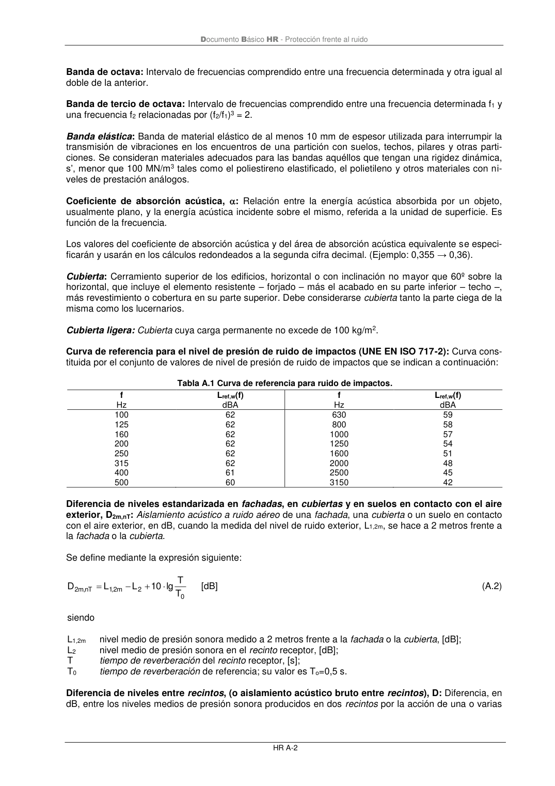

DB-HR Protección frente al ruido · edición 2019-12-20 · capa oficial
Documento DB-HR-oficial · SHA-256 del PDF a67baeca5138bb1f121f797d23a79a4557bd9ac4abacd954024893e05411eeab
Página física 44 de 80.
Copia fiel del PDF fuente · Fuente oficial
Ficha de la disposición en la fuente oficial
Formato: Texto de la página (Markdown)
Documento Básico HR - Protección frente al ruido
HR A-2
Banda de octava: Intervalo de frecuencias comprendido entre una frecuencia determinada y otra igual al
doble de la anterior.
Banda de tercio de octava: Intervalo de frecuencias comprendido entre una frecuencia determinada f1 y
una frecuencia f2 relacionadas por (f2/f1)3 = 2.
Banda elástica: Banda de material elástico de al menos 10 mm de espesor utilizada para interrumpir la
transmisión de vibraciones en los encuentros de una partición con suelos, techos, pilares y otras parti-
ciones. Se consideran materiales adecuados para las bandas aquéllos que tengan una rigidez dinámica,
s’, menor que 100 MN/m3 tales como el poliestireno elastificado, el polietileno y otros materiales con ni-
veles de prestación análogos.
Coeficiente de absorción acústica, : Relación entre la energía acústica absorbida por un objeto,
usualmente plano, y la energía acústica incidente sobre el mismo, referida a la unidad de superficie. Es
función de la frecuencia.
Los valores del coeficiente de absorción acústica y del área de absorción acústica equivalente se especi-
ficarán y usarán en los cálculos redondeados a la segunda cifra decimal. (Ejemplo: 0,355 → 0,36).
Cubierta: Cerramiento superior de los edificios, horizontal o con inclinación no mayor que 60º sobre la
horizontal, que incluye el elemento resistente – forjado – más el acabado en su parte inferior – techo –,
más revestimiento o cobertura en su parte superior. Debe considerarse cubierta tanto la parte ciega de la
misma como los lucernarios.
Cubierta ligera: Cubierta cuya carga permanente no excede de 100 kg/m2.
Curva de referencia para el nivel de presión de ruido de impactos (UNE EN ISO 717-2): Curva cons-
tituida por el conjunto de valores de nivel de presión de ruido de impactos que se indican a continuación:
Tabla A.1 Curva de referencia para ruido de impactos.
f
Hz
Lref,w(f)
dBA
f
Hz
Lref,w(f)
dBA
100
125
160
200
250
315
400
500
62
62
62
62
62
62
61
60
630
800
1000
1250
1600
2000
2500
3150
59
58
57
54
51
48
45
42
Diferencia de niveles estandarizada en fachadas, en cubiertas y en suelos en contacto con el aire
exterior, D2m,nT: Aislamiento acústico a ruido aéreo de una fachada, una cubierta o un suelo en contacto
con el aire exterior, en dB, cuando la medida del nivel de ruido exterior, L1,2m, se hace a 2 metros frente a
la fachada o la cubierta.
Se define mediante la expresión siguiente:
0
2
m
2
,1
nT
,
m
2
T
T
lg
10
L
L
D
+
−
=
[dB]
(A.2)
siendo
L1,2m
nivel medio de presión sonora medido a 2 metros frente a la fachada o la cubierta, [dB];
L2
nivel medio de presión sonora en el recinto receptor, [dB];
T
tiempo de reverberación del recinto receptor, [s];
T0
tiempo de reverberación de referencia; su valor es To=0,5 s.
Diferencia de niveles entre recintos, (o aislamiento acústico bruto entre recintos), D: Diferencia, en
dB, entre los niveles medios de presión sonora producidos en dos recintos por la acción de una o varias

Datos candidatos: compruebe celdas y notas en el PDF.